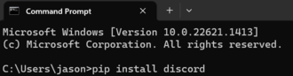
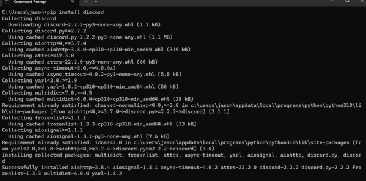
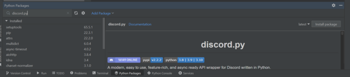

In this article we will cover installing discord.py in order to use it for ur bot. If you are using replit you don't need this as replit will automatically import the library when you run your program.
If you are using the default python editor or another IDE that uses the same files, the easiest way to
download a package like discord.py is by using pip. Pip is a built in package installer with python.
All you need to do is open up the command prompt on your computer and use the command "pip install discord":

If this command is successful you will see it start writing
a bunch of meaningless lines that look like this:

If
you do not get that writing and get an error instead it probably means you didn't add python to your
environment variables. You can find out how to do this
here. Otherwise you should be good to go. You can test this by opening python and importing discord.
If you don't get any errors then it worked.
Pycharm is a popular python IDE and is my IDE of choice that I used for this tutorial. VM stands for
virtual machine which is basically like running a program that acts like its own computer. In Pycharm
when you open a new project it creates it on a virtual machine meaning you won't have access to the same
libraries used in previous projects. However Pycharm includes a package manager which is very easy to use
and will install discord for you. First open a project on Pycharm. Then click package manager in the
bar at the bottom:

Now search for discord.py in the search
bar and then click install package on the right side. Pycharm will automatically install it for you and
you are now able to use it in the current project.